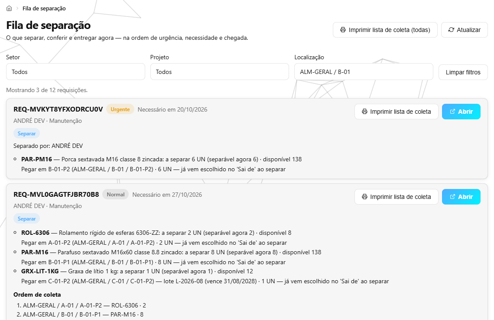
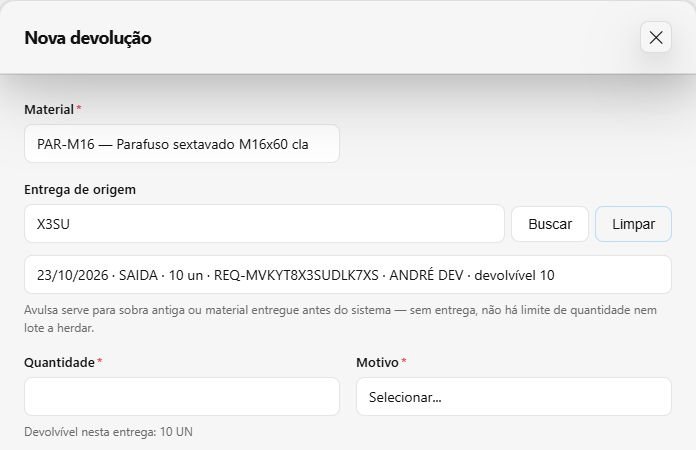
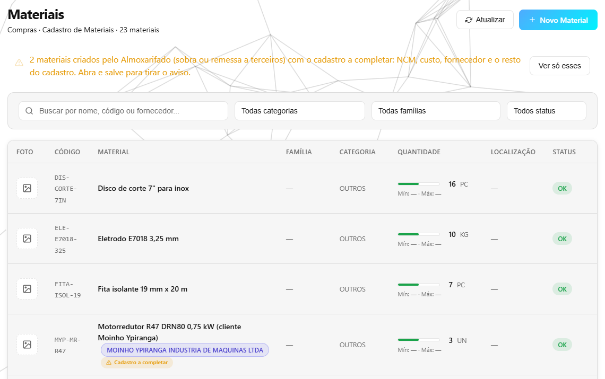
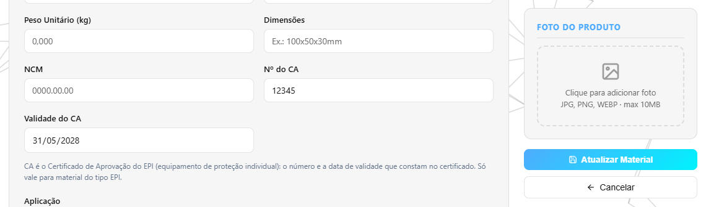

O que foi feito no sistema nesta semana
Semana de 15/11 a 21/11/2026 · CRM GMP Industriais
A Fila de separação ganhou filtros por setor, projeto e localização, a tela Devoluções ganhou a busca da entrega, o Compras passou a ser avisado do material criado pelo Almoxarifado que precisa ter o cadastro completado, e o cadastro de material de EPI passou a explicar o CA. Por baixo, a entrega e a separação passaram a mostrar exatamente o que pode sair, e desfazer um ajuste, uma saída ou excluir uma requisição passou a devolver as peças às prateleiras de onde saíram. No total, 21h de trabalho, a maior parte no cuidado com peças de lote bloqueado e com número de série.
O que você já pode ver na tela
Filtros na Fila de separação
Onde: Almoxarifado → Fila de separação, no topo da tela.
Antes: a Fila mostrava todas as requisições juntas. Quem cuida de um setor, de um projeto ou de um corredor do galpão tinha de ler a lista inteira para achar o seu trabalho.
Agora: três filtros — Setor, Projeto e Localização. Escolher um corredor mostra também as prateleiras dentro dele. Com filtro ligado aparece "Mostrando 3 de 12 requisições." e o botão Limpar filtros. A ordem de urgência não muda, cada requisição mostra o projeto, e Imprimir lista de coleta (todas) imprime só o que está na tela. Os filtros continuam escolhidos ao abrir uma requisição e voltar.

Buscar a entrega na devolução
Onde: Almoxarifado → Devoluções → Nova Devolução, campo Entrega de origem.
Antes: para devolver material de uma entrega antiga, era preciso clicar várias vezes em "Carregar entregas mais antigas" e procurar na lista.
Agora: um campo de busca acha a entrega pelo número da requisição, pela OS ou pela data (DD/MM/AAAA). Enter também busca. Sem resultado, a tela diz "Nenhuma entrega deste material para …", e Limpar volta à lista completa.

O Compras é avisado do material com cadastro a completar
Onde: Compras → Materiais.
Antes: ao registrar uma sobra ou uma remessa a terceiros de um material que ainda não existia, o Almoxarifado criava o material com poucos dados (sem NCM, custo nem fornecedor), e o Compras não ficava sabendo.
Agora: esse material chega ao Compras marcado. A lista mostra um aviso com quantos são, o botão Ver só esses e o selo "Cadastro a completar" ao lado do nome. O formulário do material também avisa. Quando o Compras salva o cadastro, a marca sai.

O cadastro de EPI explica o CA
Onde: Compras → Materiais, lápis de um material do tipo EPI.
Antes: os campos "Nº do CA" e "Validade do CA" apareciam em todo material, sem explicar o que eram.
Agora: os dois campos aparecem só quando o tipo de material é EPI, com a explicação embaixo: CA é o Certificado de Aprovação do equipamento de proteção, com o número e a validade que constam nele. O que já estava preenchido em material de outro tipo continua guardado.

O que foi feito por baixo — e por que importa
Parte do trabalho não muda a aparência das telas: é o “motor” que faz as contas e guarda as informações. Quando ele erra, o erro aparece depois, em forma de estoque que não bate ou de material que some. Esta semana, no motor:
A tela de entrega mostra o que de fato pode sair
O problema: dois itens da mesma requisição tiravam do mesmo lote, e a tela dizia que cada um podia entregar 3, quando só havia 3 para os dois; a entrega dos dois juntos era recusada. Quando o lote da separação ficava bloqueado depois, a tela ainda contava aquelas peças. E a entrega pulava para outro lote sem dizer por quê.
O que foi feito: a janela de entrega e a Fila dividem o lote entre os itens, na ordem do pedido, e deixam de contar a parte separada que não pode mais sair. A entrega diz quantas peças de cada lote estão bloqueadas ou em inspeção, e a recusa de dois itens na mesma prateleira explica a conta ("sobra 1, que não cobre a quantidade"). A dica "Pegar em" da Fila deixou de mandar a um lote com peça presa que não cobre o pedido. A troca para a saída automática passou a dizer de qual prateleira a peça saiu, e a peça com número de série deixou de levar a peça que outro item já tinha separado.
O que isso evita: o almoxarife confiar num número da tela e levar uma recusa na hora de entregar.
Desfazer um lançamento devolve as peças ao lugar certo
O problema: uma saída tirava 3 peças da prateleira A e 3 da B. Ao desfazer, as 6 voltavam todas para uma prateleira só, e a outra ficava vazia no sistema, embora as peças estivessem lá. O mesmo acontecia ao desfazer um ajuste de saldo e ao excluir uma requisição já entregue. Pior: desfazer um ajuste depois de outros movimentos voltava o total a um número antigo, e as entradas e saídas feitas depois sumiam da conta (o total ficava 2 quando o certo era 8).
O que foi feito: o sistema passou a guardar de quais prateleiras cada saída, ajuste ou entrega tirou as peças, e o desfazer devolve a essas mesmas prateleiras. Desfazer um ajuste passou a desfazer só a diferença que ele fez; quando isso deixaria o saldo negativo, é recusado com "o saldo já foi consumido". O ajuste de saldo para baixo também passou a tirar primeiro das peças que não estão separadas para uma requisição, e o ajuste num lote não deixa mais o lote negativo.
O que isso evita: saldo por prateleira que não bate com o que está no galpão, e um total errado depois de desfazer um lançamento antigo. Lançamentos feitos antes desta semana continuam voltando como antes.
Peças com número de série e de lote bloqueado saem e voltam pelo lote certo
O problema: a devolução de uma peça com número de série para a quarentena ou a sucata não guardava de qual lote ela era. A devolução ao cliente era recusada só porque a prateleira padrão estava bloqueada, mesmo com o lote guardado em outro lugar. O bloqueio feito em Inspeções ficava sempre "Sem lote". E o desfazer de uma nota era recusado quando o lote tinha peças de duas notas.
O que foi feito: as devoluções passaram a guardar o lote da peça. A saída confere a prateleira onde o lote está. Bloquear Material aceita a indicação do lote. A janela Devolver ao cliente ganhou a escolha da prateleira, a lista de lotes mostra quanto de cada um está livre, e a janela avisa logo ao abrir quando o material está reservado para uma OS. As janelas de retalho e de devolução ao fornecedor avisam logo ao abrir que a peça com número de série é baixada em Movimentações. A liberação de um lote com peças de duas notas guarda de qual nota veio cada parte, e o desfazer da nota espera a liberação do lote que está acontecendo ao mesmo tempo.
O que isso evita: saldo por lote que não fecha, recusas sem motivo e aviso que só aparece depois de o formulário inteiro estar preenchido.
Tempo gasto
| O que foi feito | Tempo |
|---|---|
| Planejamento das alterações e estimativas de tempo | 2h |
| Cadastro de material de EPI: explicação do CA | 45 min |
| Almoxarifado: peças com número de série e de lote bloqueado (devoluções, saída, bloqueio e liberação de lote) | 10h30 |
| Almoxarifado: entrega e Fila de separação (números certos e filtros) | 2h45 |
| Almoxarifado: ajuste de saldo, desfazer lançamentos, busca na devolução; material da sobra avisado no Compras | 5h |
| Total | 21h |
Tempo medido pelo registro do trabalho feito na semana.
Quer conferir?
- Abra Almoxarifado → Fila de separação e escolha uma localização no filtro: a frase "Mostrando N de M requisições" aparece e só ficam as requisições daquele lugar. Clique em Abrir numa delas e volte: o filtro continua escolhido.
- Abra Almoxarifado → Devoluções → Nova Devolução, escolha um material que já foi entregue, digite parte do número da requisição no campo de busca e aperte Enter: a lista de entregas fica só com ela.
- Abra Compras → Materiais: se houver material criado numa sobra ou remessa, o aviso aparece no topo. Clique em Ver só esses, abra um deles e salve: o selo sai.
- Em Compras → Materiais, abra um material do tipo EPI: os campos do CA aparecem com a explicação. Troque o tipo para outro: os campos somem.
- Abra Almoxarifado → Inspeções → Bloquear Material num material com lote: o campo do lote aparece.